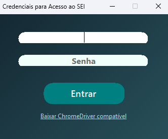
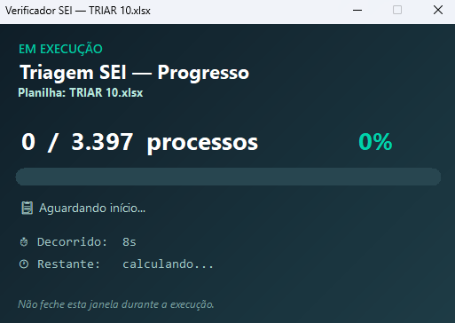
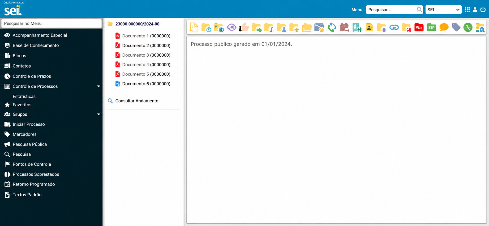
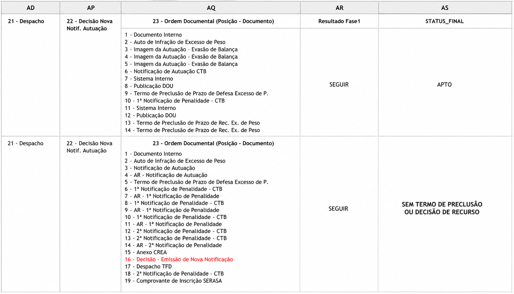
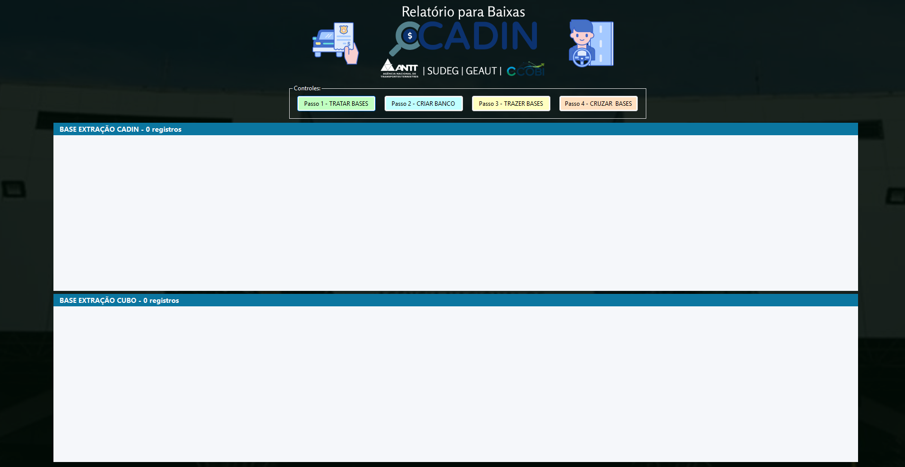
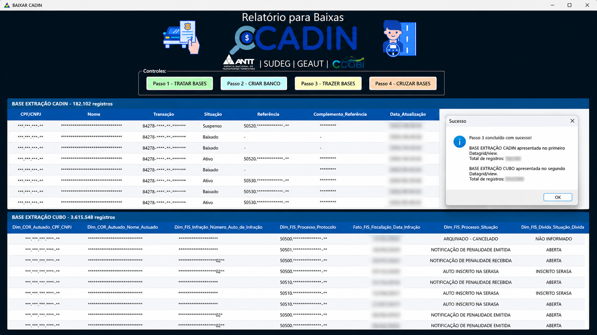
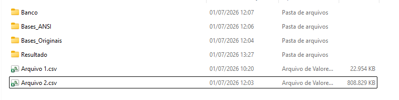
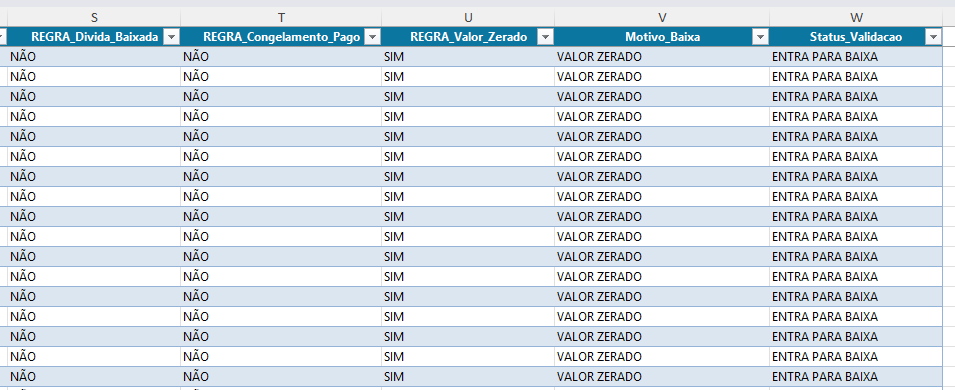

Atuo com análise de dados, gestão de projetos, automação de processos e soluções de TI, criando ferramentas e estratégias digitais que otimizam rotinas, melhoram a produtividade e transformam dados em decisões inteligentes.
Um resumo sobre minha trajetória, interesses e objetivos profissionais.
Sou um profissional interessado em análise de dados, gerenciamento de projetos, tecnologia e soluções digitais, com foco em transformar informações em insights relevantes para apoiar a tomada de decisão e a melhoria contínua dos processos. Tenho facilidade em aprender novas ferramentas, compreender necessidades de negócio e aplicar conhecimentos técnicos em soluções práticas, organizadas e eficientes.
Atuo com interesse na organização, interpretação e visualização de dados, buscando identificar padrões, acompanhar indicadores e gerar informações que contribuam para decisões mais estratégicas. Também tenho foco no planejamento, execução e monitoramento de projetos, prezando pela clareza na comunicação, cumprimento de prazos, organização das etapas e alinhamento entre objetivos, entregas e resultados.
Gosto de trabalhar em iniciativas que envolvam otimização de processos, estruturação de informações, automação de tarefas e melhoria da produtividade. Meu objetivo é contribuir para projetos que gerem valor real, unindo análise crítica, visão estratégica e uso inteligente da tecnologia.
Criação de scripts, sistemas e soluções digitais para automatizar processos, reduzir tarefas manuais e melhorar fluxos de trabalho.
Organização, tratamento e análise de dados com Power BI, Excel e SQL para acompanhamento de métricas e apoio à tomada de decisão.
Aplicação de tecnologia para otimização de processos, integração de informações, melhoria contínua e ganho de eficiência operacional.
Tecnologias e ferramentas que fazem parte da minha jornada profissional.
Organização, interpretação e análise de informações para apoiar decisões estratégicas.
Criação de indicadores, relatórios e dashboards para transformar dados em insights.
Criação de interfaces, protótipos e layouts visuais para soluções digitais.
Fórmulas, organização de dados, tabelas, relatórios e apoio à análise de informações.
Consulta, organização, filtragem e tratamento de dados em bancos relacionais.
Criação de medidas, cálculos e indicadores para modelos analíticos no Power BI.
Desenvolvimento de dashboards, relatórios visuais e painéis para análise de dados.
Desenvolvimento de soluções, lógica de programação e aplicações com foco em eficiência.
Estruturação de páginas web, organização semântica de conteúdo e criação de layouts base.
Estilização de interfaces, responsividade, animações, layouts modernos e identidade visual.
Criação de interações, manipulação do DOM, lógica de programação e funcionalidades dinâmicas.
Formação, cursos e certificações que comprovam minha evolução profissional.
Diploma de graduação tecnológica, demonstrando formação académica na área de tecnologia.
Abrir diplomaDiploma de pós-graduação, fortalecendo a formação profissional e a especialização.
Abrir diplomaCurso voltado para análise de dados, visualização e criação de relatórios com Power BI.
Abrir certificadoFormação com foco em fundamentos de análise de dados, interpretação e tomada de decisão.
Abrir certificadoCurso com foco em ferramentas, fórmulas, tabelas e organização de dados no Excel.
Abrir certificadoCurso prático de criação de dashboards, modelagem e visualização de dados com Power BI.
Abrir certificadoExperiência com dados, automação, processos, tecnologia e apoio à tomada de decisão.
Atuação na Agência Nacional de Transportes Terrestres (ANTT) com automação de processos, tratamento de dados, geração de insights, indicadores e apoio à tomada de decisão, utilizando Power BI, DAX, SQL, Excel e C#.
Organização e distribuição de tarefas relacionadas a processos, incluindo triagem manual, validação de processos triados, acompanhamento de demandas e estruturação de fluxos com apoio de Excel, SQL e soluções em C#.
Apoio na organização e validação de informações para inscrição de processos em cadastros públicos federais e sistemas nacionais de proteção ao crédito, como CADIN e SERASA, contribuindo para cobrança e recuperação de créditos.
Criação de dashboards, relatórios, interfaces e soluções digitais com foco em clareza, usabilidade e visualização de informações, utilizando Power BI, Figma, HTML, CSS e JavaScript.
Projetos que demonstram minhas habilidades em dados, Business Intelligence, desenvolvimento e automação.
Dashboard interativo de performance comercial para o acompanhamento de métricas estratégicas e apoio à tomada de decisão. Criado com o objetivo de demonstrar habilidades em visualização de dados, apresentação de indicadores e construção de análises visuais criativas, capazes de gerar insights relevantes para o negócio.
Abrir dashboardDashboard interativo desenvolvido para analisar a influência e acompanhar o volume de interações por cidade, identificando como essas interações se convertem em potenciais leads. A solução apresenta indicadores estratégicos de forma clara e organizada, apoiando a visualização dos dados e a tomada de decisão.
Abrir dashboardAplicação web para gestão de senhas e controle de gastos empresariais, criada para facilitar o acompanhamento de despesas, valores vencidos e distribuição de custos por pessoa ou setor. Cofre de senhas com armazenamento local, sem envio de dados para servidores externos, permitindo backup e restauração apenas por arquivo JSON criptografado.
Ver projeto



Automação de triagem que acessa o Sistema Eletrônico de Informações, consulta uma relação de processos e identifica a fase atual de cada um e pendências documentais por meio de lógica criada em SQL, indica em qual fase está o processo e se está apto para cobrança. Reduz o tempo em comparação à triagem manual pois faz até 7 triagens por minuto.
Ver fotos



Solução de automação desenvolvida para integrar duas bases em CSV, convertendo os arquivos para ANSI e importando os dados para um banco de dados. Em seguida, realiza o cruzamento das informações por meio de scripts SQL e gera um resultado consolidado em Excel, salvo automaticamente em uma pasta criada na área de trabalho.
Ver fotos
SELECT
a.nome_setor,
b.operação,
b.valor_gasto
FROM empresa a, gastos b
WHERE a.id_setor = b.id_setor
AND b.valor_gasto > 4300
ORDER BY b.valor_gasto DESC;
Aplicação de SQL na importação de diferentes maneiras a depender do volume de dados, em seguida a organização, relacionamento de dados, utilizando cruzamento entre tabelas, condições de associação, filtros por valor e ordenação para estruturar informações e apoiar análises de negócio.
Ver resultadoEntre em contacto para oportunidades, projetos, parcerias ou networking.
Estou aberto a novas oportunidades, colaborações e desafios na área de tecnologia, desenvolvimento e dados.